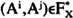

by Abraham Kandel
CRC Press, CRC Press LLC
ISBN: 084934297x Pub Date: 11/01/91
|
|
Fuzzy Expert Systems
by Abraham Kandel CRC Press, CRC Press LLC ISBN: 084934297x Pub Date: 11/01/91 |
| Previous | Table of Contents | Next |
The analyst will generally need aid to determine what information is best to be requested, in terms of being relevant to the task at hand and cognitively easy to assess. He must be aided in the evaluation of acquired information for consistency and in ways to avoid and resolve them. Finally, the information must be aggregated and interpreted within a valid model for decision making. In this chapter, we develop an inquiring system, aimed at directing and controlling the assessment step of screening procedures that addresses the needs of the decision analyst.
The problem we are dealing with here is identifying the minimal set of information required for typical screening procedures of decision support in order to make a recommendation for decision.
Let the set of feasible alternatives be represented by A = (a1,a2,…,am) and the attribute set by X = (X1,X2…,Xn). Define X+ as the extended consequence set of dimension n v m that contains all the possible consequences that may occur. For the case of m alternatives and n attributes, the extended consequence set is given by:
which contains nvm elements . The subscripts correspond to attributes and the superscripts, to alternatives. The power set of X+ is the family of all subsets of X+, and Fx represents a subset of the power set of X+. We denote the set of alternatives by Fx.
The set of alternatives Fx allows only simple preference comparisons. That is, given two alternatives Ai and Aj in Fx, we could only assess whether Ai > Aj, Aj > Ai, or Ai~Aj, where the symbol > indicates “is at least as good or preferred to” and ~ indicates “indifference”. Consider a strength of preference notion that involves comparison of preference differences. Denote by a nonempty subset of FxvFx so that  if and only if Ai > Aj and not Aj > Ai. The elements in are the ordered pairs (Ai,Aj) defined by the relation > in Fx. They indicate that the strength of preference of Ai over Aj is positive. contains the weak preference information provided by the decision maker excluding indifference relations. Define a relation > * in and interpret (Ai,Aj) > *(Ak,Al) to mean that the strength of preference of Ai over Aj is at least as much as the strength of preference of Ak over Al. The notation means both (Ai,Aj) > * (Ak,Al) and (Ak,Al) > * (Ai,Aj). Also, (Ai,Aj) > * (Ak,Al) means not (Ak,Al) > * (Ai,Aj).
When certain conditions of rational behavior are satisfied by the binary relations > in Fx Fx and > * in , representation results stating the existence of interval-valued mappings Q and Q* can be derived. These representation results can be described by set inclusion inequalities. The problem becomes a simple linear programming problem. When some form of independence among the attributes exists, such as preferential independence or mutual preferential independence, the set of inequalities is obtained by explicit assessments of simple and strength of preference relations and from preference relations inferred by independence and explicit assessments.
A goal of the inquiring system considered here is to identify a set of minimial information necessary to induce a linear order in the set of candidate alternatives. This minimal set constitutes the inquiry pattern, or set of queries that the system will present to the decision maker in order to learn about personal value perspectives and relevant factual information about the decision situation. At any time, the decision maker may refuse to respond to any query. The system will then search for another inquiry pattern leading to another, possibly the same, linear order. This approach is directed at achieving effectiveness of the overall process. Effectiveness, in this case, clearly requires adaptation and learning.
This goal-seeking behavior can be formulated as a set of simple deterministic dynamic programming problems. At every stage k = 0, 1,…,N we have a set {Rk} representing the possible orders of the alternatives. At the initial stage 0,R0 represents no order on the set of alternatives. At the final stage N,{RN} represents the set of all possible linear orders. At intermediate stages k = 1,…,N - 1, {Rk} represents the set of partial orders.
The policy qk is a query obtained from the set of admissible queries Qk at each stage k = 0,1,…,N - 1. There are a large number of possible preference comparisons in Fx, some of which may be more susceptible than others to the effects of biases and flawed heuristics. Through use of procedures developed in subsequent sections, we are able to select from the set of possible queries at each stage those that are behaviorally meaningful to the decision maker and operationally relevant to our goal of inducing a linear order on the set of alternatives Fx.
| Previous | Table of Contents | Next |